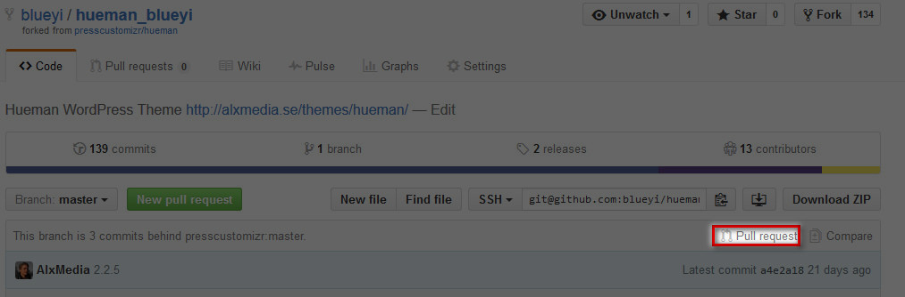
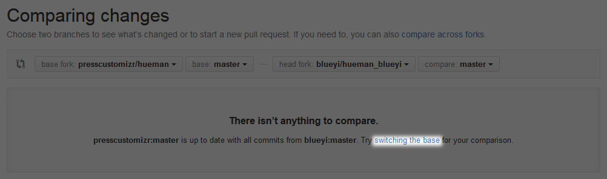
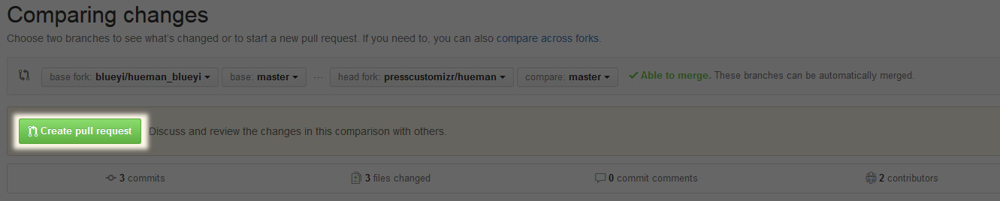
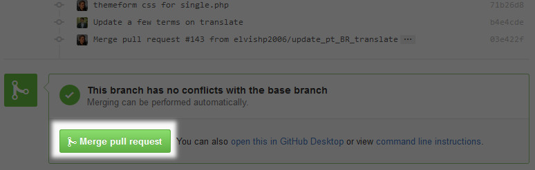

git常用配置命令:
git config --global user.name "Your Name" 相当于设置你将来的仓库所有人
git config --global user.email "you@example.com" 仓库所有人的邮箱
git config --global color.ui true 让git显示颜色
在仓库目录下新建.gitignore，编辑需要忽略掉的文件，支持通配符，并把它提交到仓库即可。可以访问https://github.com/github/gitignore 寻找常用的.gitignore文件
git config --global alias.[alias_name] [git_command] 为git命令配置别名，跟bash里面的别名配置类似
例如:
1 | git config --global alias.lg "log --color --graph --pretty=format:'%Cred%h%Creset |
配置之后执行git lg就等价于执行上面双引号中的一大堆。
git的全局配置文件在/home/username/.gitconfig
git的各个仓库配置文件在仓库目录下的.git/config
git本地维护常用命令
git init 初始化当前目录为git的版本控制仓库
git add [FILES..] 把文件添加到仓库的暂存区，方便一并提交
git commit -m "STRING" 提交刚才添加到仓库暂存区的文件，相当于是对文件建了一个快照，所以提交的只相当于是修改，STRING可以设置成方便自己以后查看的快照备注
git status 查看当前的仓库状态，例如都添加了哪些文件，哪些没有被添加，哪些做了修改还没有提交
git diff [FILENAME] 查看当前名为FILENAME的文件与上次commit的文件有哪些不同
git diff [HEAD[N个^]] -- [FILENAME]查看FILENAME当前文件内容与之前某个版本内容的差异
git log (--pretty=oneline) 查看当前的提交历史 (--graph) 查看分支合并图
git reflog 查看命令历史，可以显示对文件操作过的所有命令历史，包含SHA1码的一部分，可以方便的回退到任何一个版本
git reset --hard [commit_id/HEAD[^]] 回退版本,它会撤销某次提交，但是此次提交之后的修改都会被退回到暂存区。其中commit_id即为SHA1码的一部分，HEAD后面有几个^就表示回退几个版本，或者使用HEAD~[n]，其中n即是通过git reflog查看到的序号。
git reset HEAD -- [FILENAME] 将添加到暂存区的文件撤消到工作区
git reset HEAD 撤销当前add的所有文件，相当于撤销add操作
git revert [commit_id/HEAD[^]/HEAD[n]] 撤销某次操作，此次操作之后的commit都会被保留，例如有1,2,3个commit,git revert 2之后通过git log查看时会发现，只有1,3。
git checkout -- [FILENAME] 丢弃工作区中对应文件的修改 相当于使用版本库中的相应文件替换工作区中的文件
git rm [FILENAME] 删除文件
git分支相关命令
git branch 查看分支
git branch [branch_name] 创建名为branchname的分支
git checkout [branch_name] 切换分支
git checkout -b [branch_name] 创建并切换分支
git merge [branch_name] 将分支branch_name合并到当前分支,使用的是快速合并模式(fast forward)，删除分支后会丢失分支信息，以后将无法查看到分支合并记录
git merge --no-ff -m "string" [branch_name] 普通合并模式，可以使用git log --graph查看分支合并情况
git branch -d [branch_name] 删除已经合并的分支。 “-d”参数改为”-D”后可以强制删除未合并的分支
git stash 暂存当前分支的工作现场
git stash apply ([stash@{n}]) 恢复当前分支到暂存n或者直接恢复最近一个stash，参数可选,这里的暂存跟git add到的暂存区不是同一个意思，这个相当于工作状态收藏夹
git stash drop ([stash@{n}]) 删除某个暂存，参数可选
git stash pop ([stash@{n}]) 恢复并删除某个暂存，参数可选
git远程操作命令
远程操作相关命令
下面以github上的远程仓库为便演示，当然该远程仓库地址为本地裸版本库也是一样的。ssh-keygen -t rsa -b 4096 -C "YOUREMAIL@YOUREMAIL.COM" 生成新的SSH密钥，以便使用远程仓库时使用SSH加密传输,生成SSH key之后复试.ssh/id_rsa.pub 中的内容添加到github，详情可以查看github帮助
ssh -T git@github.com 测试GITHUB上的密钥是否设置正确
git remote add origin 'git@github.com:yourusername/projectname.git'
或git remote add origin 'https://github.com/yourname/projectname.git'
将本地仓库添加到远程仓库，远程仓库的名字为origin，远程仓库的项目名字即为projectname
如果出现403错误，可以考虑将.git/config中的url修改为ssh://git@github.com/FanChael/Hash.git
git push -u origin master 第一次将本地仓库的master分支推送到远程 并关联本地和远程的master分支
git push origin master 把本地master分支的最新修改推送至GitHub
git push origin dev:dev 提交本地创建的dev分支为远程的dev分支
git push origin :dev 删除刚提交到远程的dev分支
git push [origin branch-name] 推送某个分支到远程，如果不加参数则推送push.default设置的默认推送内容，如果未设置push.default则推送当前分支，如果当前分支与远程分支没有关联，则使用以下命令关联即可
git branch --set-upstream origin remote_branch_name 关联本地当前分支与远程分支以便使用不带参数的git push命令进行推送
git remote (-v) 查看远程名称，加上”-v”参数可以查看更详细的内容
git branch -r 查看远程跟踪的分支，即所有的远程分支
git clone [URL] 将远程仓库克隆到本地
git pull [origin branch_name] 拉取远程仓库中branch_name分支的最新内容到本地，并直接与当前本地分支merge,以更新本地分支内容
git fetch [origin branch_name] 获取远程分支到origin/branch_name分支，不会自动合并。
git diff branch_name..origin/branch_name 查看本地与刚fetch回来的数据差异
git fetch origin 即获取远程仓库到本地
git checkout -b local_branch_name origin/remote_branch_name 在本地创建并切换到与远程分支对应的分支，最好两个分支名字一样，常应用于先有远程分支时。
git diff local_branch_name remote_branch_name FILENAME 比较本地某个文件与远程分支上的区别
git tag [tag_name] ([commit id]) 将当前分支的最后一次提交加上标签名tab_name,或者指定某个commit id，例如标签即为版本号
git tag -d [tag_name] 删除某个标签
git tag -a [tag_name] -m "string" 添加标签并附带描述
git tag -s [tag_name] -m "string" 添加带PGP签名的的标签及描述
git tag 显示所有标签
git show [tag_name] 显示标签的详细信息
git push origin [tag_name] 推送本地标签到远程
git push origin --tags 推送本地所有未被推送到远程的标签
git push origin :refs/tags/tag_name 删除远程上某个的标签
创建本地的祼版本库
祼版本库是指仅用于存放仓库版本信息，不含有工作区的git源库。例如我们在github上存储的仓库，实际并不与我们的本地仓库目录结构一致，它只是保存了我们的仓库版本信息，以便需要时将其克隆到本地，成为带工作区的git版本控制仓库，以及推送时将本地库推送后自动被转换为远程的裸版本库。为了方便我们在本地操作或者以本地硬盘存储git仓库，可以采用本地裸版本库。祼版本库通常以后缀.git结尾。有两种方式为一个项目创建本地的祼版本库，实际上当这个仓库有个绝对地址时，也就类似于github上的了。
克隆生成祼版本库
假如已经在本地初始化一个git的工作目录，现在想为其创建一个相应的祼版本库，以便向其中推送我们的版本控制。命令如下：
1 | git clone --bare /path/to/my/workspace/demo /path/to/repos/demo.git |
查看裸库目录结构：
1 | $ ls -a |
现在可以将我们的工作目录推送到该库了
1 | git remote add origin /path/to/repos/demo.git |
或者直接推送：
1 | git push /path/to/repos/demo.git |
创建生成裸版本库
命令：
1 | git init --bare /path/to/repos/demo.git |
有了裸版本库地址/path/to/repos/demo.git，后面的操作就都一样了，可以直接从其克隆来创建本地库工作目录，也可以将其添加为本地工作目录的一个远程存储仓库
常见问题
将master分支整个替换为dev分支
场景：假如使用dev分支已经工作了一段时间，master分支已经落后数个版本，现在想将当前的dev分支设为新的master。方法如下：
方法一：git checkout dev 切换到dev分支git merge --strategy=ours master 保留dev分支的全部内容，并记录合并git checkout master 切换回mastergit merge dev 使用快速合并将dev合并到master分支，不会有冲突问题git push -f origin master 防止推送冲突，强制推送
方法二(不推荐)：git branch -m master old_master 修改当前master分支名字为old_mastergit branch -m dev master 将dev修改为mastergit push -f origin master 强制推送
如何撤销合并
场景：在master分支上将dev合并到master分支后，发现合并错了分支，或者觉得暂时不应该合并，可以使用以下方法撤消合并。这是官方的教程http://git-scm.com/blog/2010/03/02/undoing-merges.html
方法一：reset到merge前的版本即可，要求每个合作者都将本在的HEAD回滚回去git checkout master 切换到进行合并操作时的分支git reset --hard [merge前的版本号] 回滚到merge前的版本号，例如HEAD^
.gitignore排除总结
- 忽略一个特定的文件：/filename.extension
- 忽略所有同名的文件：filename.extension
- 忽略一个特定的目录：folder/ （这会连同其下所有子目录及文件都被忽略）
- 但是排除一个特定的模式：（在 3 的基础上）!folder/some/important/filename.extension
- 忽略指定目录下所有子目录下的特定文件：folder/**/filename.extension
- 同上，但是只匹配文件扩展名：folder/*/.extension
- 同上，但是只匹配特定的目录：folder/**/tmp/
参考：https://ruby-china.org/topics/23561
git fetch 与 git pull的区别
git fetch: 相当于是从远程获取最新版本到本地，不会自动merge
常用使用场景：获取远程分支到origin/master，然后与本地master分支比较之后，再合并1
2
3git fetch origin master
git log -p master..origin/master
git merge origin/master类似的实现方式如下
1
2
3git fetch origin master:temp
git diff temp
git merge temp即：首先获取远程master分支到temp分支，比较之后再合并
git pull:相当于从远程获取分支的最新版本并与本地对应分支进行merge。eg:git pull [origin branch_name]即从远程获取branch_name分支并与本地的branch_name分支合并，如果去除可选参数则表示获取当前本地分支的远程分支并合并。相当于git fetch与git merge两个命令，但会隐藏掉过程细节，所以通常建议使用fetch而不是pull。
GitHub上与他人合作个人项目
仅限于个人建立的项目，不包括组织项目。
GitHub官方对应的相关链接如下：
Fork A Repo: https://help.github.com/articles/fork-a-repo/Syncing a fork: https://help.github.com/articles/syncing-a-fork/Using pull requests: https://help.github.com/articles/using-pull-requests/Merging a pull request: https://help.github.com/articles/merging-a-pull-request/Closing a pull request: https://help.github.com/articles/closing-a-pull-request/
一、如果对方将你添加为合作者，也就是将你添加到Collaborators列表，那么，你将自动拥有对该项目的几乎所有的修改权限，所有此时只需要新建分支就可以直接开写代码了。当然，如果项目为私有项目，必须添加队友为合作者时，队友才能看见你的代码仓库。
二、如果不是合作者，则需要通过fork别人的代码仓库，然后修改之后再通过创建pull request申请将代码合并。如果fork之后原仓库代码又有了更新，则可以通过同步这个fork来更新你当前的代码。具体操作如下：
首先通过github网站上项目右上角的Fork按钮来Fork一份想要协作的项目仓库。Fork结束后就会在你的账号下拷贝一份该项目的副本。
通过
git clone https://github.com/YOUR_USERNAME/YOUR_FORK.git克隆你账号下Fork的项目到本地。通过git remote -v命令可以查看该仓库所配置的远程仓库详情。然后通过命令git remote add upstream https://github.com/ORIGINAL_OWNER/ORIGINAL_REPOSITORY.git将你的仓库与原仓库的远程地址相关联，以便接收原仓库的更新，通过git remote -v来查看当前配置。通过
git fetch upstream将原仓库的更新接收到本地的upstream中，master中commit将会存储在本地的upstream/master。本地切换到master分支后通过git merge upstream/master将fork的master分支与upstream同步。本地修改过fork的仓库代码后，先提交到自己账号下的相应仓库，然后通过GitHub网站上分支旁边的
compare,review,create a pull request按钮来查看代码更新并创建pull request。当确定你的代码可以提交给原仓库主合并时，点击Create pull request即可创建一个pull request提示原仓库主及其合作者可以考虑将你的修改与当前仓库相应分支进行合并。
解决部分网络无法使用SSH连接的问题
使用ssh连接最大的好处是可以不需要每次进行远程操作都输入密码，但github官方比较推荐使用https连接，应该是考虑更安全。
有些网络禁用了部分SSH连接，导致使用命令ssh -T git@github.com测试连接时提示连接超时，此时可以通过以下方式测试是否可以让SSH使用HTTPS的443端口连通ssh -T -p 443 git@ssh.github.com，如果测试通过，则说明可以让ssh通过HTTPS的端口来通信。此时需要创建以下文件~/.ssh/config，如果是windows，则在用户目录下面的.ssh文件夹中创建config文件，内容如下：
1 | Host github.com |
保存后应该就可以正常使用ssh -T git@github.com测试通过了。
官网链接在此： Using SSH over the HTTPS port
如何让github上fork的项目保持更新
应用场景为：当你看到某一个好的项目，觉得很不错，以后有可以自己会使用到，然后你可能会考虑到先fork到自己的账号下。fork的作用就是在你的账号下建立一份该仓库的关联副本，你可能通过修改你账号下的该副本然后提交后给原仓库发一个pull request来请求原仓库作者合并你的提交。当你fork过原仓库一段时间后，发现原仓库又更新了很多提交，你现在希望自己账号下的该仓库副本与原仓库保持同步，当然你可以删除你的这个副本然后重新fork一次，或者你的副本已经有了自己的修改需要保留，那么你可以采用以下两种方法：
- 直接在
github网页上操作，即利用github上的pull request功能，所以这个pull request不仅仅可以向原仓主发出合并请求，还可以更新你的副本仓库。操作截图如下：- 1.首先打开你的副本仓库，点击
Pull request或Compare按钮
 - 2.点击
switching the base，或者手动切换base fork为你的副本仓库以及head fork为原仓库
 - 3.切换完成之后点击
Create pull request，并填写Title（就是你想备注的信息）之后即可Create pull request
 - 4.滚动窗口到最下面后点击
Merge pull request即可（同样可能需要填写你想要的备注信息），然后Confirm merge。

- 1.首先打开你的副本仓库，点击
- 通过在本地仓库中增加原仓库地址为一个
remote仓库，然后fetch后切换到相应的分支或者将更新分支合并到希望更新的分支，在更新本地仓库后，再提交即可。具体操作过程如下：- 1.增加原分支为远程分支，命名为
upstream：git remote add upstream https://github.com/whoever/whatever.git - 2.
fetch该远程仓库下的所有分支到remote-tracking分支：git fetch upstream - 3.确保你当前在
master分支：git checkout master - 4.如果你已经对当前自己的副本做过更改，并且想要保留，则将更新合并到主分支：
git merge upstream/master，如果想要保留所有原仓库的历史更新则使用rebase复写当前分支：git rebase upstream/master - 5.然后正常推送即可，如果推送有冲突，可以直接强制推送：
git push -f origin master
- 1.增加原分支为远程分支，命名为
如何提交时忽略所有删除的文件
应用场景：当使用git一段时间之后，如果对文件做过较多的删除操作之后，使用git add .之后会提示手动使用git rm来删除那些已经被删除的文件，此时如果想一条命令来忽略掉所以这些需要使用git rm来删除的操作，那就使用git add -A。然后就不会再有那一堆的红色提示了。
git如何永久性地从历史提交中删除某个文件
应用场景：某次不小心将含有密码等重要数据的文件提交到了仓库中，后来又commit多次之后才发现，曾经提交了一个不该提交的文件，需要将其从所有历史中删除。可以如下操作：
删除文件历史
进入你的仓库根目录，进行以下操作，其中PATH-TO-YOUR-FILE-WITH-SENSITIVE-DATA是你需要删除的文件的相对路径
1 | git filter-branch --force --index-filter \ |
如果该文件曾经在其他路径，并被重新命名后移到了现在的路径，同样需要对原文件执行相同的操作
确认已经完成删除
确认你的文件以及相应的历史是否已经完全移除，可以通过以下命令查看相应文件的commit id:
1 | git log --pretty=oneline <PATH-TO-YOUR-FILE-WITH-SENSITIVE-DATA> |
然后根据commit id查看文件修改历史：
1 | git show <commit-id> |
强制更新远程仓库
确认后可以将你的敏感文件加入.gitignore，然后后进行强制更新远程仓库即可：
1 | git push origin --force --all |
更新tags
如果有相应的tags，也应该更新tags
1 | git push origin --force --tags |
还有其他多种方法，可以参考：
1.https://help.github.com/articles/removing-sensitive-data-from-a-repository/
2.http://stackoverflow.com/questions/307828/completely-remove-file-from-all-git-repository-commit-history